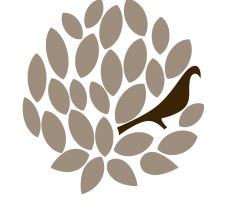

Restaurant gastronomique Le Petit Jardin.
L'espace bistrot
Le bistrot
Dégustation et Convivialité…
Au bistrot, convivialité est le maître mot, des plats inspirés des 5 continents à partager pour un moment en toute décontraction à deux ou entre amis.
Le bistrot est ouvert du Mardi au Samedi midi et soir.
Le jardin
Ambiance et partage...
Installés sur des tables hautes, vous pouvez voir l’élaboration de nos petits plats gourmands préparés sous vos yeux.